현장 9년, 세 번의 전환
안 되는 이유를 찾아
안 되는 이유를 찾아
되는 구조로
바꿉니다.
현장에서 반복되는 문제를 발견하고
누구나 실행할 수 있는 구조로 바꿔왔습니다.
Kim KyungRim
From the Field to the System
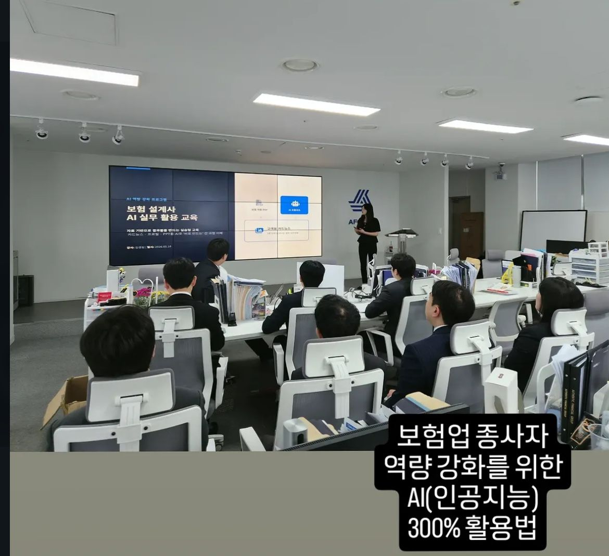
Why Me
제가 만드는 건 설명이 아니라, 행동입니다
현장을 거치며 생각이 바뀐 지점들입니다.
잘하는 사람 한 명보다, 잘할 수 있는 방법을 남깁니다.
문제가 반복되면, 사람이 아니라 구조를 의심합니다.
다시 만들지 않아도 되게. 그래서 매뉴얼과 교육을 함께 만듭니다.
About
01
02
03
04
05
복잡한 일을 푸는 방법
다섯 가지 원칙으로 일합니다.
사람이 아니라 시스템이 기억하게 합니다.
바로 실행할 수 있게 씁니다.
기술을 현장의 언어로 바꿉니다.
쓰이지 않으면, 완성이 아닙니다.
Skills
역량과 도구
기획하고, AI를 붙이고, 문서로 완성합니다.
Business & Workflow Planning
서비스기획
사업기획
운영설계
AI Utilization
ChatGPT
Claude
Gemini
Documentation
Excel
PowerPoint
Word
Featured Projects
문제를 어떻게 풀었는지, 다섯 가지 이야기
각 프로젝트에서 무엇을 발견했고, 어떤 역할로, 어떻게 풀었는지를 담았습니다.
SaaS 사용자 교육
ThinkWise
Problem
따라 해도 실무로 연결하지 못하는 사용자들
Approach
기능이 아니라 ‘실제로 쓰는 순간’을 기준으로 교육 구조 설계
Result
법무연수원, 청소년 마인드맵 경진대회까지 교육 영역 확장
Insight좋은 교육은 기능을 설명하는 게 아니라, 사용자가 바로 행동하게 만드는 것이다.
AI 교육 플랫폼 · 2026
AI EduMentor
Problem
국비훈련(KDT) 중도탈락 5배 증가 (2021년 681명 → 2024년 3,485명)
Approach
규칙엔진+머신러닝+인간 코치, 4단계 자동 개입 파이프라인을 실제 작동하는 시뮬레이터로 설계
Result
목표 완주율 79% → 85%+, 8주 A/B 실증 설계까지 포함한 사업 제안서 완성
Insight없는 걸 만들 때는, 문제부터 다시 정의해야 한다.
정부지원사업 · 2026
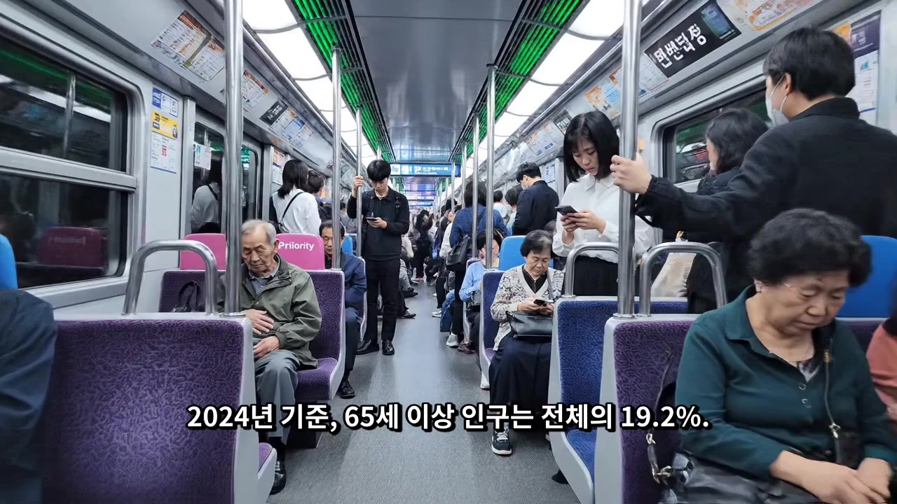
청바지 (NowYouth / 모두의창업)
Problem
고령층 디지털 소외, ‘도와줘야 할 대상’이라는 시각
Approach
시니어를 공감 데이터 생산자로 재정의하고 사업계획으로 구체화
Result
정부지원사업 최종 제출, 5부작 영상까지 총괄
Insight서비스는 문제를 해결하는 것보다, 문제를 다시 정의하는 데서 시작된다.
운영 프로세스 구축
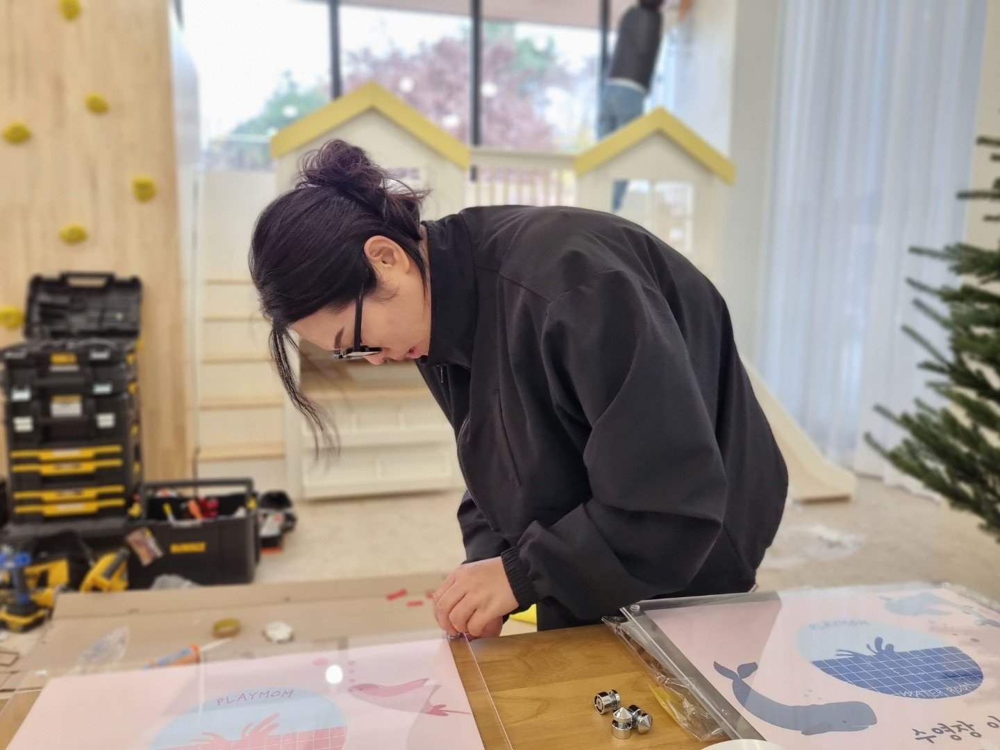
키플레이스
Problem
매장마다 다른 운영 방식, 개인에게만 남는 정보
Approach
카카오워크 도입과 점주 매뉴얼로 운영 체계 표준화
Result
55개 매장이 같은 기준으로 운영
Insight운영은 사람이 기억하는 게 아니라, 시스템이 기억해야 한다.
기업교육
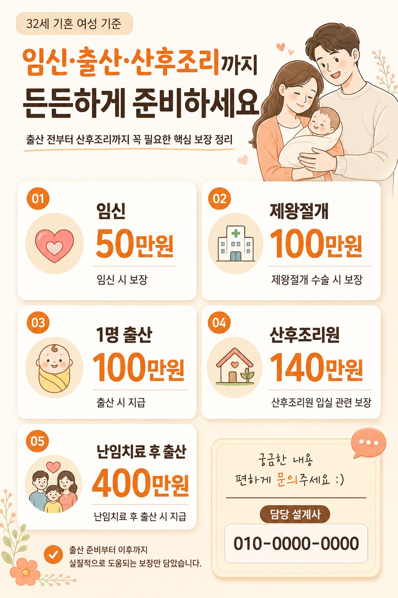
AI 실무 교육 (보험설계사 대상)
Problem
AI를 배워도 실무에 적용하지 못하는 보험설계사들
Approach
실제 업무 사례로 바로 써먹는 실습 중심 커리큘럼
Result
현장에서 바로 활용 가능한 생성형 AI 역량 확보
Insight안다는 것과 쓸 줄 안다는 것 사이엔, 실습이라는 다리가 필요하다.
Process
문제를 푸는 다섯 단계
관찰에서 개선까지, 반복하는 방식입니다.
Observe문제를 본다
현장에서 반복되는 문제를 있는 그대로 봅니다.
Diagnose원인을 찾는다
문제가 아니라, 문제가 반복되는 이유를 찾습니다.
Structure구조를 만든다
찾은 원인을 실행 가능한 구조로 바꿉니다.
Enable실행하게 만든다
그 구조를 다른 사람도 쓸 수 있게 만듭니다.
Improve계속 개선한다
써보고, 다시 고치는 걸 반복합니다.
Deliverables
이런 걸 만듭니다
무엇으로 결과를 남기는지 보여줍니다.
Video
기획이 영상이 되는 순간
청바지 경쟁 제출을 위해 기획·제작한 소개 영상입니다.
청바지(NowYouth) 소개영상 · 최종버전
03:43
Gallery
키플레이스 현장
공간 운영
AI 실무 교육
AI 실무 교육
ThinkWise 교육
청소년 마인드맵 경진대회
청소년 마인드맵 경진대회
청바지 영상 콘텐츠
청바지 영상 콘텐츠
현장의 기록
설명이 아니라, 현장에 있었다는 증거입니다.
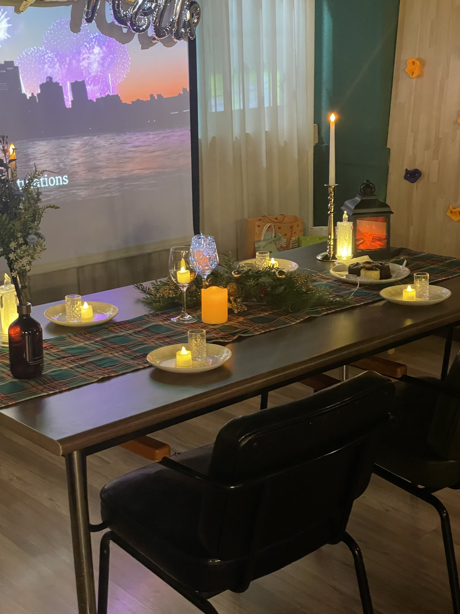
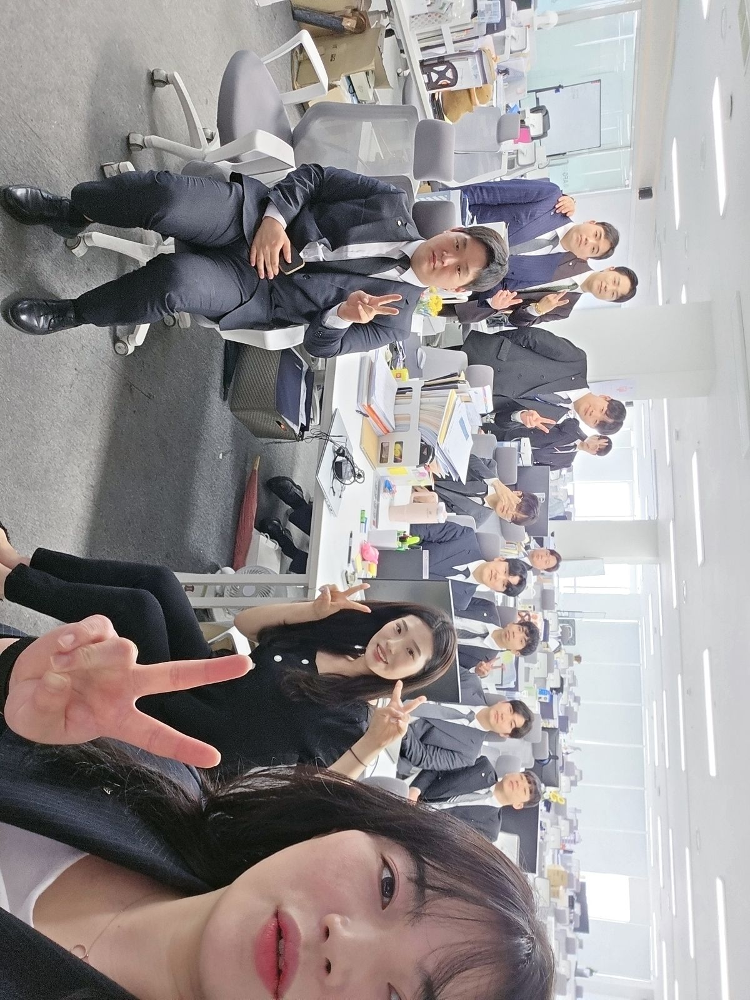
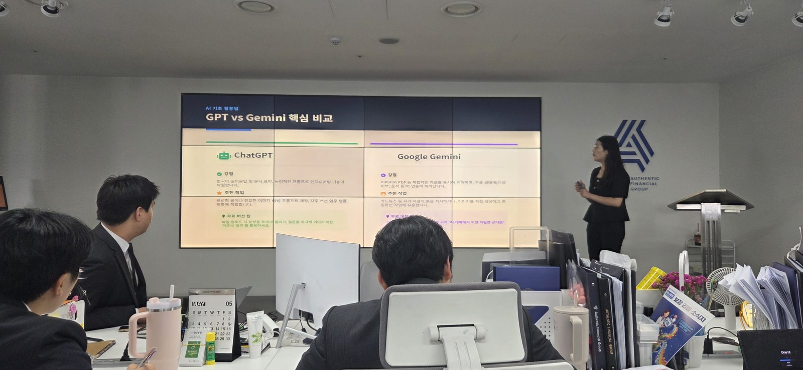
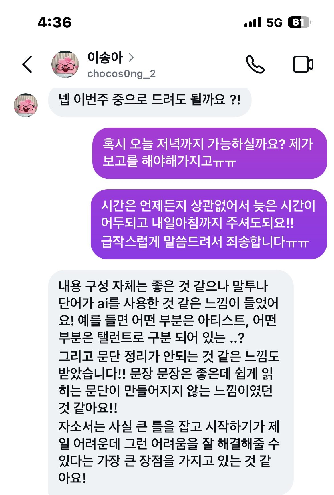
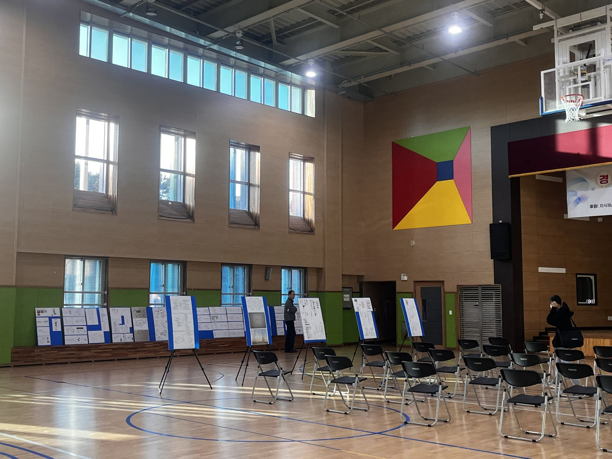
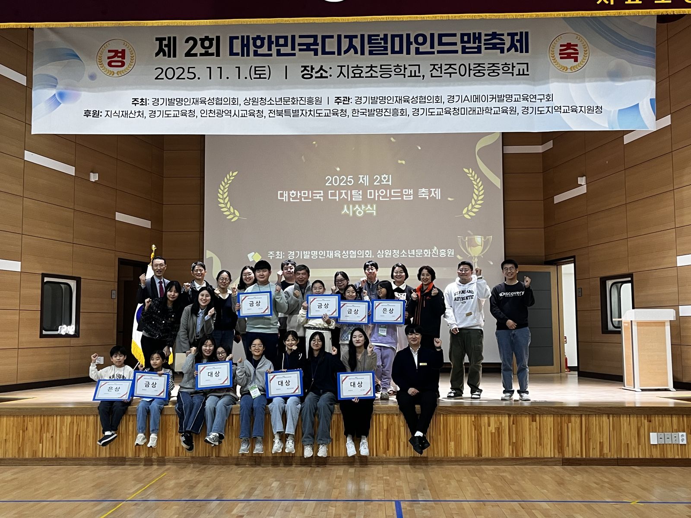
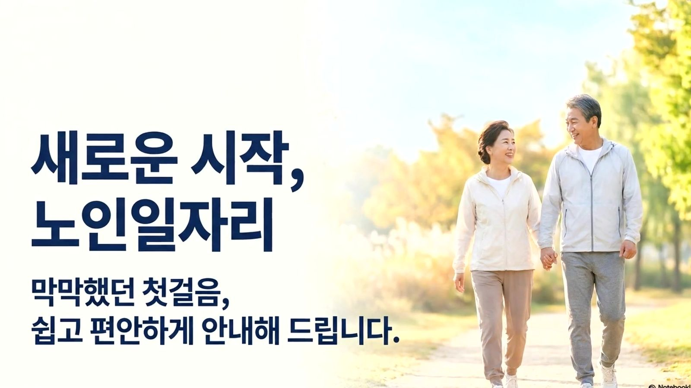
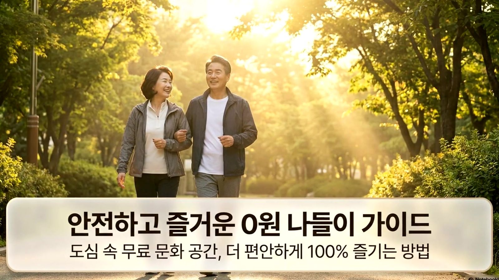
Experience
여정
무엇을 했는지보다, 어떻게 성장했는지의 기록입니다.
2015 – 2019
선인자동차
Customer Service- 고객 응대를 시작한 곳
- 설명해도 안 통하는 순간들을 처음 마주함
2020 – 2022
교학모터스
Customer Service- 같은 문제가 반복된다는 걸 확인함
- CS 매뉴얼을 만들며 처음으로 구조화를 시도함
2022 – 2023
키플레이스
Service Planning- 처음으로 운영을 설계하는 역할을 맡음
- 기억이 아니라 시스템에 의존하는 법을 배움
2024 – 2026
심테크시스템 (ThinkWise)
SaaS Operations & Education- 처음으로 교육을 설계하는 역할을 맡음
- 설명 중심 교육의 한계를 느끼고 흐름 중심으로 전환함
2026
AI EduMentor
AI Education Platform- 기획자로서 사업 제안서를 처음부터 끝까지 써봄
2026
청바지 (NowYouth / 모두의창업)
Government Project- 기획부터 사업화까지, 처음부터 끝까지 직접 끌고 감